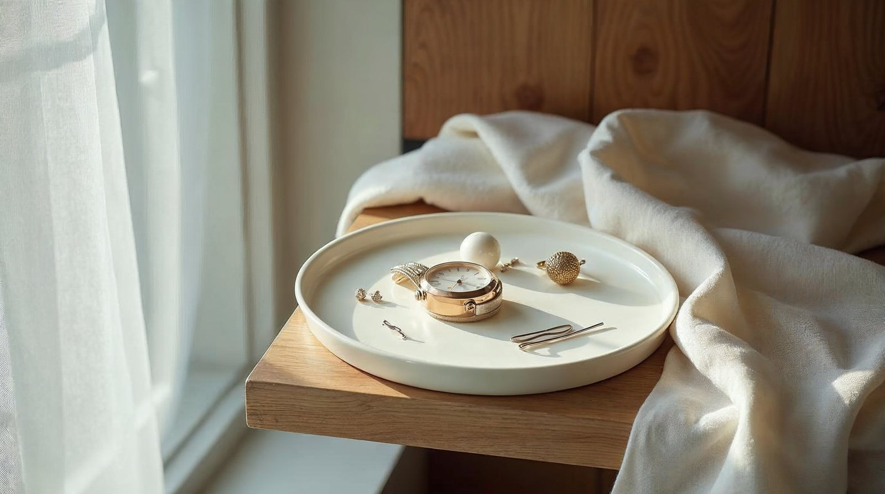
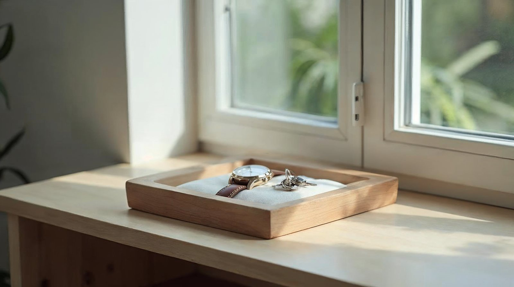
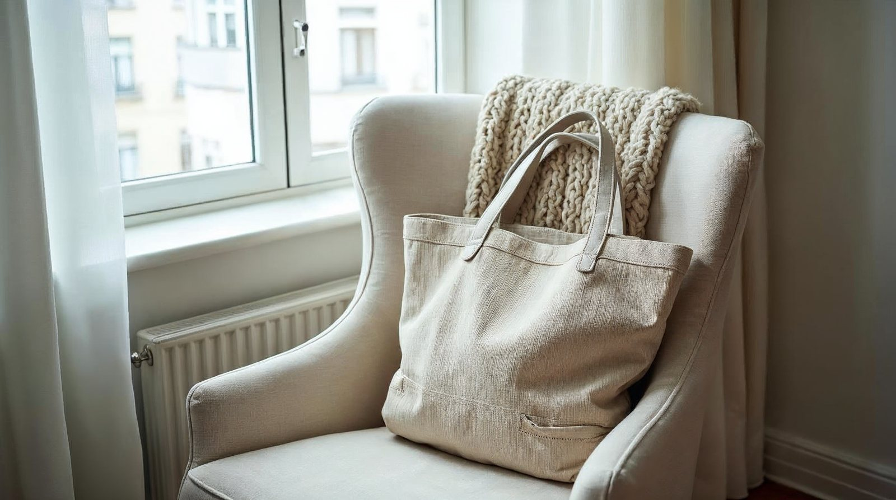
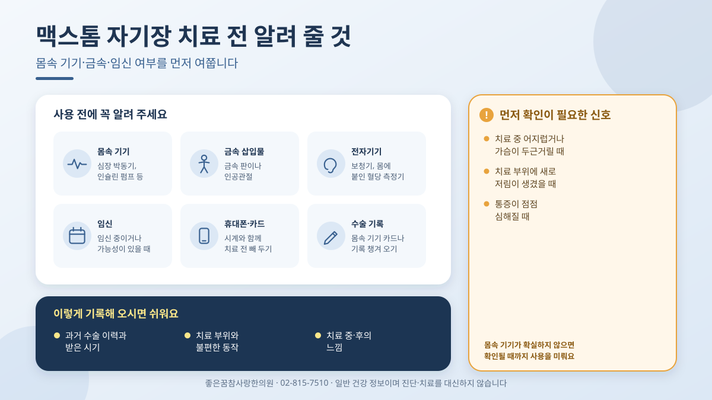

이종호 한의사 감수좋은꿈참사랑한의원 대표원장 (한의사 면허번호 19769)발행 2026-11-25 · 수정 2026-11-25
이 글의 차례
자기장 치료기라는 말을 들으면 몸에 무엇이 닿는지, 누가 조심해야 하는지 궁금해집니다. 좋은꿈참사랑한의원의 맥스톰 자기장 치료기는 자기장을 이용하는 물리요법 장비이며, 침이나 추나와 이어서 쓰기도 합니다.
예를 들어 오래전에 무릎 수술을 받아 금속이 들어 있거나, 심장 박동기를 쓰고 계신 분은 자기장 장비를 쓰기 전에 먼저 확인이 필요합니다. 본인이 기억하지 못하는 삽입물이 있을 수도 있어, 수술 이력을 가족과 함께 떠올려 보시거나 수술 기록을 가져오시면 판단에 도움이 됩니다.
왜 먼저 알려 주셔야 할까요
- 자기장은 몸속 전자 의료기기에 영향을 줄 수 있어 미리 확인이 필요합니다.
- 금속 삽입물이 있는 부위는 따로 판단해야 합니다.
- 임신 중에는 사용 여부를 먼저 확인합니다.
- 주머니 속 카드나 전자기기가 영향을 받을 수 있습니다.
- 보청기나 몸에 붙이는 혈당 측정기 같은 전자기기도 미리 말씀해 주시는 것이 좋습니다.
먼저 이렇게 여쭙니다
- 심장 박동기나 인슐린 펌프 같은 기기가 몸에 있나요?
- 수술로 넣은 금속 판이나 인공관절이 있나요?
- 임신 중이거나 가능성이 있나요?
- 치료할 부위는 어디이고, 감각이 둔한 곳은 없나요?
일상에서 먼저 해 볼 수 있는 것
- 휴대폰, 카드, 시계는 치료 전에 빼 두기
- 몸속 기기 카드나 수술 기록이 있으면 챙기기
- 치료 중 불편하면 바로 말하기
- 치료 뒤 가볍게 움직여 보기
- 보청기·몸에 붙이는 측정기 같은 전자기기도 미리 알리기

한의원에서 함께 살필 수 있는 경우
- 같은 부위 통증이 반복되는 경우 생활 동작과 함께 살핍니다.
- 다른 장비가 맞지 않는 경우 다른 방법을 검토합니다.
- 치료 뒤 반응을 다음 진료에서 이어서 봅니다.
좋은꿈참사랑한의원에서는 맥을 짚으며 몸속 기기와 금속 삽입물 여부를 여쭙고, 진찰 후 필요하다고 판단될 때 맥스톰 자기장 치료기를 씁니다. 상태에 따라 침·약침·추나와 이어서 쓰거나 다른 방법을 정합니다.

헷갈리기 쉬운 점
자기장 장비는 모든 분께 쓰는 것이 아니며, 다른 방법이 더 맞다고 판단되면 쓰지 않습니다. 몸속 기기가 있는지 확실하지 않을 때는 확인될 때까지 사용을 미루는 편이 안전합니다.
자주 하는 오해
- 오래전 수술이라 상관없을 것이라고 넘기는 분이 있지만, 시기와 상관없이 몸속에 남아 있는 금속이나 기기는 모두 말씀해 주시는 것이 좋습니다.
- 치료 부위에서 먼 곳에 있는 기기는 괜찮을 것이라고 짐작하기 쉬운데, 사용 여부는 진찰 후 따로 판단하므로 위치와 관계없이 알려 주세요.
예를 들면 이런 경우입니다
- 예를 들어 치과 임플란트를 했거나 오래전 골절로 핀이나 나사를 넣은 적이 있는 경우라면, 언제 어느 부위에 했는지 기억나는 만큼 말씀해 주세요. 사용 여부는 진찰 후 따로 판단합니다.
- 예를 들어 연속혈당측정기처럼 몸에 붙이는 기기를 쓰는 경우라면, 붙인 위치와 기기 이름을 알려 주세요. 기기 설명서에 자기장과 관련된 주의 사항이 있으면 함께 보여 주셔도 좋습니다.
- 예를 들어 어르신이 수술 이력을 잘 기억하지 못하시는 경우라면, 보호자가 함께 오시거나 다니시는 병원의 진료 기록, 몸속 기기 카드를 챙겨 오시면 판단에 도움이 됩니다.
스스로 점검해 보세요
- 심장 박동기·인슐린 펌프처럼 몸속에 있거나 몸에 붙이는 의료기기가 있다
- 수술로 넣은 금속 판·나사·인공관절이 있다
- 치과 임플란트나 치아 교정 장치가 있다
- 임신 중이거나 그 가능성이 있다
- 보청기나 몸에 붙이는 측정기를 쓰고 있다
- 치료할 부위에 최근 새로 생긴 저림이나 감각 변화가 있다
하나라도 해당하거나 잘 모르겠다면 접수 때부터 말씀해 주세요. 확인이 끝날 때까지는 장비 사용을 미루고 다른 방법을 먼저 살핍니다.

이렇게 기록해 오시면 상담이 쉬워집니다
- 몸속 의료기기와 금속 삽입물
- 치료 부위와 불편한 동작
- 치료 중·후의 느낌
- 복용 중인 약
- 과거 수술 이력과 받은 시기
이런 증상은 먼저 확인이 필요합니다
- 치료 뒤에도 두근거림·어지럼이 이어지거나, 가슴이 아프거나 숨이 찬 경우
- 몸속 기기가 있는데 치료 뒤 기기 작동이 평소와 다르게 느껴지는 경우
이런 신호가 있으면 한의원보다 가까운 병원이나 응급실을 먼저 찾으세요.
얼마나 지켜보고, 언제 확인하면 좋을까요
- 장비 치료 뒤 가벼운 뻐근함이 하루 이틀 이어지는 정도라면, 그 느낌과 시간을 메모해 다음 진료 때 알려 주세요.
- 같은 느낌이 사흘 넘게 이어지거나 점점 심해진다면 다음 예약 전에 연락해 주세요.
- 치료 중 어지럽거나 가슴이 두근거리면 참지 말고 바로 말씀해 주세요. 장비를 멈추고 상태를 확인합니다.
- 치료 부위에 새로 저림이 생겼다면 다음 진료를 기다리지 말고 전화(02-815-7510)로 알려 주세요.
처음 오시면 이렇게 진행합니다
첫 방문에는 접수 때 기본 정보를 적으면서 몸속 의료기기, 금속 삽입물, 임신 가능성을 함께 알려 주세요. 진료실에서는 먼저 맥을 짚으며 불편한 부위와 경위를 여쭙고, 신체 진찰을 한 뒤 필요하면 초음파로 근육과 힘줄을 확인합니다.
그다음 오늘 받을 치료와 이유를 먼저 설명드리며, 맥스톰 자기장 치료기를 쓰기로 정하면 휴대폰·카드·시계를 따로 두고 편한 자세를 맞춥니다. 치료 중 불편하면 언제든 말씀해 주시고, 치료 뒤에는 상태를 다시 확인해 다음 방문을 안내해 드립니다.
장비 사용 가능 여부나 비용이 궁금하다면 방문 전 전화(02-815-7510)로 확인해 주세요.
관련 글

여쭙는 것
- 심장 박동기나 인슐린 펌프 같은 기기가 몸에 있나요?
- 수술로 넣은 금속 판이나 인공관절이 있나요?
- 임신 중이거나 가능성이 있나요?
생활에서 해 볼 것
- 휴대폰, 카드, 시계는 치료 전에 빼 두기
- 몸속 기기 카드나 수술 기록이 있으면 챙기기
- 치료 중 불편하면 바로 말하기
한의원에서 함께 살필 것
- 같은 부위 통증이 반복되는 경우 생활 동작과 함께 살핍니다.
- 다른 장비가 맞지 않는 경우 다른 방법을 검토합니다.
- 치료 뒤 반응을 다음 진료에서 이어서 봅니다.
먼저 확인이 필요한 신호
- 치료 뒤에도 두근거림·어지럼이 이어지거나, 가슴이 아프거나 숨이 찬 경우
- 몸속 기기가 있는데 치료 뒤 기기 작동이 평소와 다르게 느껴지는 경우
한눈에 보는 표
| 구분 | 핵심 |
|---|---|
| 여쭙는 것 | 심장 박동기나 인슐린 펌프 같은 기기가 몸에 있나요? 수술로 넣은 금속 판이나 인공관절이 있나요? |
| 생활에서 해 볼 것 | 휴대폰, 카드, 시계는 치료 전에 빼 두기 몸속 기기 카드나 수술 기록이 있으면 챙기기 |
| 한의원에서 함께 살필 것 | 같은 부위 통증이 반복되는 경우 생활 동작과 함께 살핍니다. 다른 장비가 맞지 않는 경우 다른 방법을 검토합니다. |
| 먼저 확인이 필요한 신호 | 치료 뒤에도 두근거림·어지럼이 이어지거나, 가슴이 아프거나 숨이 찬 경우 몸속 기기가 있는데 치료 뒤 기기 작동이 평소와 다르게 느껴지는 경우 |
자주 묻는 질문
아프지 않나요?
느끼는 정도는 사람과 부위에 따라 다릅니다. 받는 중 불편하면 바로 말씀해 주세요.
심장 박동기가 있으면요?
꼭 먼저 알려 주세요. 사용 여부를 따로 판단합니다.
휴대폰을 갖고 있어도 되나요?
치료 전에 휴대폰과 카드는 따로 두시는 편이 좋습니다.
옷을 입은 채로 받나요?
부위와 장비 사용 방법에 따라 다르며, 진료 때 안내해 드립니다.
좋은꿈참사랑한의원은 재진 때 지난번 이야기부터 이어서 여쭙니다. 진료시간과 예약은 오시는 길에서 확인하세요.
어디서 상담받을 수 있나요?
좋은꿈참사랑한의원은 서울 동작구 만양로2길 2 신성빌딩 3층·5층(서울 동작구 상도동, 7호선 상도역 3번 출구 근처)에 있습니다. 한의사 3명(이종호 대표원장, 조영기 수석진료원장, 정원영 진료원장)이 진료합니다. 진료시간은 평일 09:30~20:00(점심 13:00~14:00), 토·일·공휴일 09:30~15:00이며, 방문 전 전화로 확인을 권합니다. 예약은 네이버 예약, 카카오톡 상담, 전화 02-815-7510로 받습니다.
이 글은 일반적인 건강 정보이며 개인의 진단이나 치료를 대신하지 않습니다. 증상이 있거나 복용 중인 약이 있다면 진료를 통해 확인하세요. 치료 효과는 개인마다 다를 수 있습니다.
작성 기준: 일반적으로 알려져 있는 건강 정보를 참고해 정리했습니다(대표원장 감수). 증상 기록은 1~2주 동안 하루 1회, 비슷한 시간에 적어 오시면 지난 상태와 비교하기 쉽습니다.